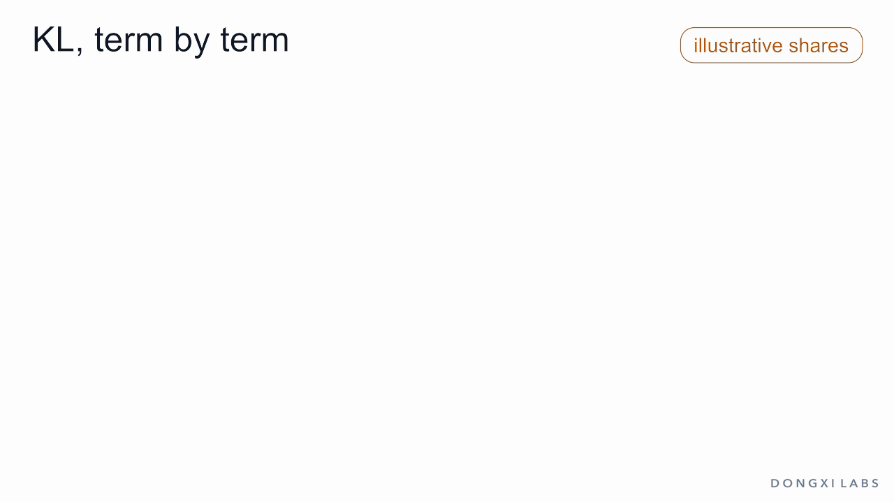
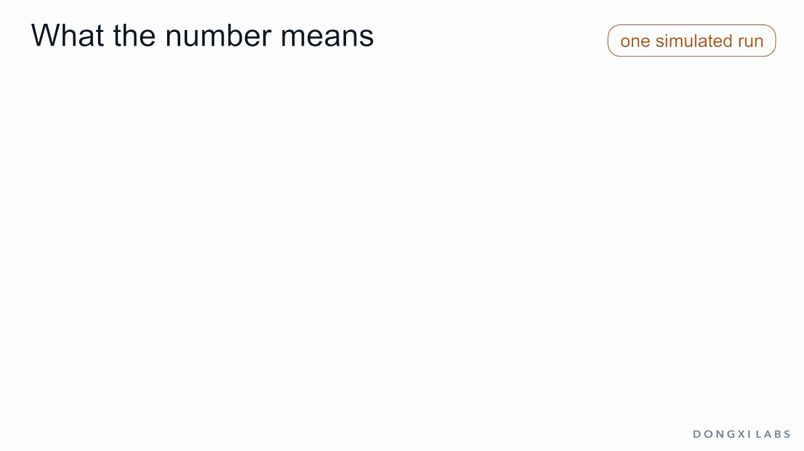
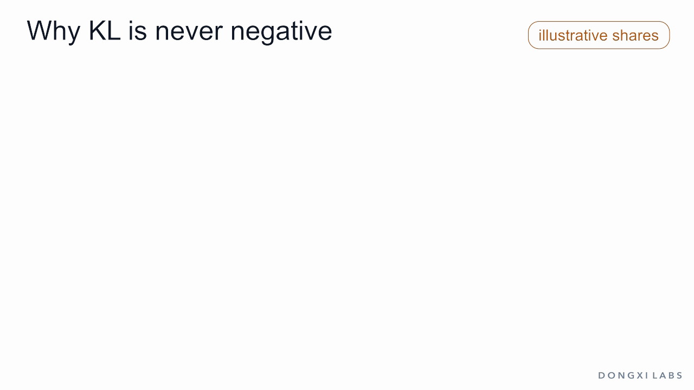
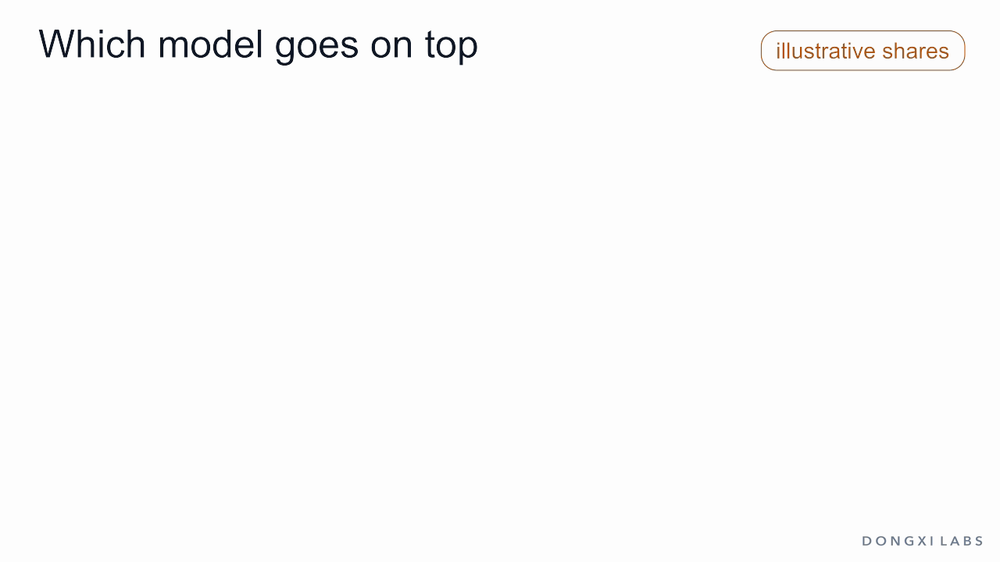
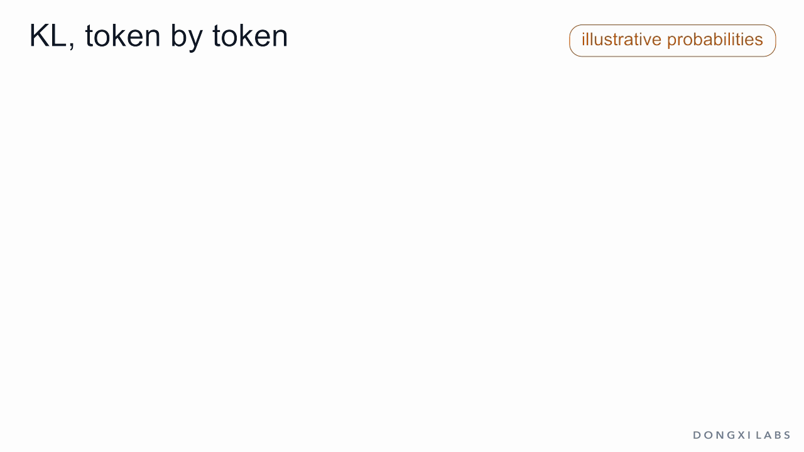
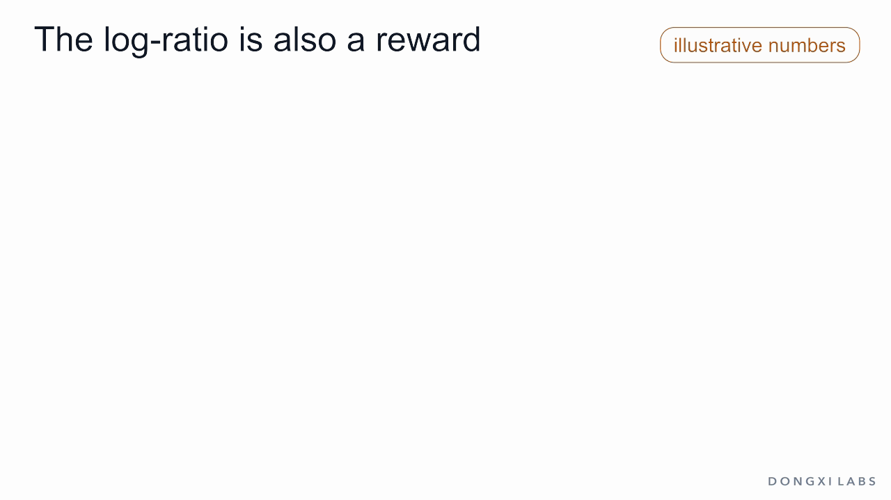

One question, five answers
Ask a chatbot How long should I boil an egg? a hundred times and you will not get the same reply a hundred times. A language model samples its words, so it holds a spread of possible answers. Suppose the spread looks like this:
- Boil it until it's done. (vague): 40% of the time
- About 10 minutes.: 25%
- A long paragraph about eggs that eventually says 10 minutes: 15%
- Soft-boiled 6–7 minutes, hard-boiled 10–12; then cold water so it peels easily. (the best answer): 12%
- 2 minutes gives a hard-boiled egg. (wrong): 8%
These shares add up to 100%. A set of shares like this is called a probability distribution, and it describes the model's habits. Call this starting model the reference.
Now train the model a little. The vague answer falls from 40% to 30%, the best answer rises from 12% to 22%, and the other three stay the same.

How much did the model change? We want one number: 0 when nothing changed, larger when more changed. The standard answer is KL divergence, or KL, named after Solomon Kullback and Richard Leibler, who introduced it in 1951.
KL matters in post-training because of a problem from the last two articles. A reward model can only be trusted near the kind of answers it was trained on, so RL training charges a price for moving away from the reference. That price is KL.
This article opens up that number, and it assumes no math beyond multiplication. KL takes three steps: a ratio, a log and an average. Each step gets its own section. After that come what the number means, why it is never negative, what it cannot do, how it is estimated on a real model, and how to read it during training. This is the sixth article in the post-training series. All probabilities and rewards in the egg example are invented for illustration; the arithmetic on them is exact.
Step 1: the ratio
For each answer, divide its new share by its old share.
- Vague answer: 0.30 / 0.40 = 0.75
- Best answer: 0.22 / 0.12 = 1.83
- The other three: 1
The ratio says how many times as likely an answer has become. Above 1 means it went up, below 1 means it went down, and exactly 1 means no change.
Why divide instead of subtract? Subtraction gives 0.10 for both answers, as if the two changes were the same size. They are not. The vague answer lost a quarter of its share; the best answer almost doubled. The ratio shows that.
Step 2: the log
Ratios have a flaw. Doubling gives 2 and halving gives 0.5. These are equal and opposite changes, yet 2 sits 1 above no change and 0.5 sits only 0.5 below it. And no change is 1, where we would like it to be 0.
We want a scale where no change is 0, up is positive, down is negative, and doubling and halving have the same size. The logarithm, written log, gives exactly that. It is the ln key on a calculator (the natural logarithm), and nobody computes it by hand. A few values:
- log(0.1) = −2.303
- log(0.5) = −0.693
- log(0.75) = −0.288
- log(1) = 0
- log(1.83) = +0.606
- log(2) = +0.693
- log(10) = +2.303
Doubling is +0.693 and halving is −0.693. Going up 10 times and going down 10 times also match.
The log has two more properties that this article uses later.
It turns multiplication into addition. Doubling twice multiplies by 4, and log(4) = 1.386, which is 0.693 + 0.693.
It falls without limit near 0. log(0.1) is −2.3, log(0.01) is −4.6, and log(0) does not exist.
The log of the ratio is called the log-ratio. For our move it is −0.288 for the vague answer, +0.606 for the best answer, and 0 for the three answers that did not change.
Step 3: the average over the new model's replies
We now have one number per answer, and we want one number in total. Take an average, with each answer counted as often as the new model says it. This is a weighted average. The new model gives the vague answer 30% of the time and the best answer 22% of the time:
- Vague answer: 0.30 × (−0.288) = −0.086
- Best answer: 0.22 × (+0.606) = +0.133
- The other three: 0
Add them: −0.086 + 0.133 = 0.047. That is the KL between the new model and the reference. Its unit is the nat, which comes from using the natural logarithm.
KL is the average log-ratio over the new model's replies: how many times more likely each reply became, on the log scale, counted as often as the new model says it.
Why use the new model's shares as the weights? Because the question is about what the new model does now. An answer it says often should count more than one it rarely says. Later sections show how much this choice matters.
Written in symbols, as it appears in papers:
KL(π ‖ π_ref) = Σ π(y) · log( π(y) / π_ref(y) )
Each piece is something you have just done:
- y is one complete answer.
- π(y) is the new model's share for that answer. π (pi) is the series' name for the model being trained, the policy.
- π_ref(y) is the reference's share.
- π(y) / π_ref(y) is step 1.
- log is step 2.
- π(y) in front of the log is the weight of step 3.
- Σ means add this up over all answers.

What the number means
The log-ratio has a concrete reading. Someone shows you one reply and asks which of the two models wrote it. If the reply is the best answer, the ratio is 1.83: the new model writes it 1.83 times as often as the reference, so this reply is evidence for the new model. If it is the vague answer, the ratio is 0.75, and the reply is evidence for the reference. The log-ratio is the size of that evidence.
Evidence from several replies multiplies as ratios, so on the log scale it adds. KL is then the average evidence per reply when the replies really come from the new model. This was the original definition: Kullback and Leibler described their quantity as the mean information per observation for telling two hypotheses apart.
That gives the number a size:
- KL 0. The two models are identical. No number of replies can tell them apart.
- KL 0.047. Our small move. Each reply adds little evidence. Reaching 20-to-1 odds takes log(20) = 3.0 of evidence, which is about 64 replies on average.
- KL 2.12. A model that always gives the best answer. The sum has one term, 1 × log(1 / 0.12). One reply gives odds of 8.33 to 1 by itself.

Why KL is never negative
One log-ratio can be negative, as the vague answer's is. The total never is. KL is 0 when nothing changed and positive otherwise. Two facts produce this.
What is lost equals what is gained. Shares add up to 1 before and after, so the 0.10 the vague answer lost is the 0.10 the best answer gained. Gains, counting losses as negative gains, add up to 0.
Each term is at least that answer's gain.
- Vague answer: gain −0.10, term −0.086. It subtracts less than it lost.
- Best answer: gain +0.10, term +0.133. It adds more than it gained.
The gains add up to 0, and every term is at least as large as its gain, so the terms add up to at least 0. The rule comes from the shape of the log: its curve always lies below the straight line x − 1, touching it only at x = 1.
What about a huge drop? Take the vague answer from 0.40 down to 0.01, with the best answer rising to 0.51. The log-ratio of the vague answer is −3.689, a large negative number. But the weight is the new share, 0.01, so its term is only −0.037. A model that hardly says an answer gives that answer hardly any weight. The best answer's term is +0.738, and KL is 0.701.

You cannot get closer to a model than being the same model. KL starts at 0 for no change and only goes up.
This behaviour depends on the exact formula. Take a move away from the best answer, from 12% down to 2%, with the vague answer rising to 50%. Two reasonable-looking alternatives fail:
- Add the log-ratios with no weights: −1.569.
- Weight them by the reference instead of the new model: −0.126. This version comes out negative for every change.
- KL, weighted by the new model: +0.076.
A negative change has no meaning here, and only the third gives a usable reading.
KL measures distance and ignores direction
That last move made the model worse, and KL still came out positive. KL never reads the answers, so it does not know which ones are good. Moving 0.10 toward the best answer costs 0.047. Moving 0.10 away from it costs 0.076. Both are charged.
Direction comes from the reward. Give the five answers rewards of 0, 1, 0.5, 2 and −1. The average reward of a model is each share times its reward, added up. The small move gets 0.30 × 0 + 0.25 × 1 + 0.15 × 0.5 + 0.22 × 2 + 0.08 × (−1) = 0.685.
RL training scores a model by its average reward minus a price for KL:
score = average reward − β × KL
β (beta) is the price of one unit of KL, chosen by whoever runs the training. With β = 1:
- Keep the reference: 0.485 − 0 = 0.485
- Move toward the best answer: 0.685 − 0.047 = 0.638
- Move away from the best answer: 0.285 − 0.076 = 0.209
- Always give the best answer: 2.000 − 2.120 = −0.120
The last line has the highest reward and a poor score. Training settles at a compromise, and β sets where. The best answer's share at that compromise, as the price rises: 1.00 with no price, 0.71 at β = 0.5, 0.40 at β = 1, 0.24 at β = 2, 0.16 at β = 5, and back to 0.12 at a very high price. How to compute that compromise is the subject of the next article.

The reward chooses the direction. β × KL limits the distance.
The same move, a different price
Add a sixth answer: Boil it 20 minutes, always, for food safety. Experts agree. It is wrong and it sounds confident. The reference almost never writes it: 0.5% of the time, with the 2-minute answer adjusted to 7.5% so the shares still add to 100%. Suppose the reward model rarely saw answers like it and overrates it.
Now compare two moves, each taking 0.10 from the vague answer:
- To About 10 minutes: 25% to 35%, ratio 1.4, KL 0.031.
- To the confident wrong answer: 0.5% to 10.5%, ratio 21, KL 0.233.
Measured by how much share moved, the two are identical: 0.10 each. KL charges the second one about 7.4 times as much, because the ratio is what enters the formula.
This is what the training needs. An answer the reference almost never writes is an answer the reward model has had little chance to learn about, so that is where its scores are least reliable. KL is most expensive at the place where the reward signal is weakest.

Which model goes on top
Swap the two models in the formula, and take the weights from the reference: KL(π_ref ‖ π). For our small move this gives 0.042, against 0.047 the other way. KL is not symmetric, which is why it is called a divergence and not a distance.
The order decides what is expensive. Two cases show it.
Dropping an answer. The new model stops saying the wrong 2-minute answer, and its 0.08 goes to the best answer. The share is 0, so the term is 0, and KL is a modest 0.102. Swapped, the reference still says that answer 8% of the time while the new model never does, the ratio is infinite, and so is the KL.
Inventing an answer. The new model gives an answer the reference never gives. In the RLHF order the ratio is infinite, and so is the KL. Swapped, nothing unusual happens.
RLHF uses KL(π ‖ π_ref) for this reason: a model should be free to drop bad answers, and should pay heavily for answers with no support in the reference. A real softmax model gives every token a small positive probability, so exact zeros are rare; a very small share simply gets a very high price.
The swapped order appears in pretraining. The loss used there, cross-entropy, equals the entropy of the data plus KL(data ‖ model). The entropy of the data does not depend on the model, so minimizing the loss minimizes that KL, with the data on top. The model has to give some probability to everything the data contains.

Real models: samples and tokens
Five answers fit in a list. A real model has more possible replies than anyone can list, so the sum cannot be computed term by term. Two facts make KL usable anyway.
Samples. KL is an average over the new model's replies, and averages can be estimated from samples. Let the new model write replies, compute the log-ratio of each, and average. One simulated run on the egg example gives 0.096 after 10 replies, 0.061 after 100 and 0.048 after 10,000, against the exact 0.047. A single reply can have a negative log-ratio; the average settles on the positive value. The replies must come from the new model itself: lower the temperature or apply top-p, and the average no longer estimates this KL.
Tokens. A reply's probability is the product of its tokens' probabilities, each given the tokens before it. The log turns that product into a sum, so a reply's log-ratio is the sum of its tokens' log-ratios. Take a three-token reply with illustrative probabilities. The reference gives the tokens 0.40, 0.50 and 0.80, so the reply gets 0.16. The new model gives 0.50, 0.50 and 0.96, so the reply gets 0.24. The reply's log-ratio is log(1.5) = 0.405, and the tokens' log-ratios are 0.223, 0 and 0.182, which add up to 0.405.
So KL can be charged token by token, and it costs one extra forward pass through the frozen reference. Two published methods do this differently:
- PPO in InstructGPT subtracts β × log-ratio from the reward at each token, with β = 0.02.
- GRPO in DeepSeekMath adds the KL to the loss, with β = 0.04. Its per-token estimate, with x = π_ref / π, is x − log x − 1, which comes from the same straight-line fact and is never negative for any token.

How to read KL during training
A training log shows KL as one curve. A few checks make it readable.
- At step 0 it must be 0. The model and the reference are the same weights. Anything else is a bug.
- A clearly negative batch average is a bug. A single token can be negative. An average that stays below 0 usually means the replies were sampled with different settings than the probabilities assume, or the mask counts prompt or padding tokens.
- Check the unit. KL per token and KL per reply differ by the length of the reply, and only runs in the same unit on the same prompts can be compared.
There is no good value of KL. KL is how far the model moved, and whether that was worthwhile has to be measured by a signal that training never sees: held-out human comparisons, benchmarks, or a verifier on checkable tasks. This independent signal is called the gold signal.
Back to the six answers. Suppose the reward model gives the confident wrong answer 3, and its true value, the gold signal, is −2. The other five answers keep their rewards as gold values. Treat each smaller β as training for longer:
- Start: KL 0, reward 0.51, gold 0.48.
- KL 0.81: reward 1.57, gold 1.10, the peak.
- KL 3.61: reward 2.67, gold −0.76, and the wrong answer now takes 69% of the replies.

The reward keeps rising the whole way, and the gold signal rises, peaks and falls. Gao, Schulman and Hilton reported this pattern in 2022 for real reward models. The same paper warns that KL alone is a poor measure of how much over-optimization has happened. So KL is read next to the reward and the gold signal, and the checkpoint to keep is the one where gold peaks.
KL tells you how far the model moved. Whether it moved somewhere better is a question for a signal it never trained on.
The log-ratio is also a reward
One last observation, and it leads to the next article. The log-ratio says how much a model raised or lowered each answer. A model that raises an answer behaves as if it values that answer. On the egg example this is exact.
Take the best compromise at β = 1, the one where the best answer reaches 40%. Its shares are 17.8%, 30.3%, 11.0%, 39.5% and 1.3%. Its log-ratios against the reference are −0.808, 0.192, −0.308, 1.192 and −1.808. Compare them with the rewards 0, 1, 0.5, 2 and −1: every log-ratio equals the reward minus the same number, 0.808.
So the model's change contains the reward, up to one shared constant. Comparisons remove that constant. Bradley–Terry, from the previous article, uses only the gap between two scores. Best answer against About 10 minutes: 2 − 1 = 1 with the rewards, and 1.192 − 0.192 = 1 with the log-ratios. Both give the same probability, σ(1) = 0.731.
This matters because that constant depends on a sum over every possible reply, which cannot be computed for a real model. A comparison never needs it.
That is the idea behind DPO, direct preference optimization. It skips the separate reward model: for each human-chosen pair, it uses β × log-ratio as the score and applies the same Bradley–Terry loss. On this pair the starting model has log-ratios of 0, a gap of 0 and a loss of 0.693. The best compromise has a gap of 1 and a loss of 0.313.

The log-ratio inside KL measures how far an answer moved, and it can also serve as that answer's reward.
Summary
- A model's habits are a probability distribution over answers. KL compares two of them with one number.
- KL takes three steps: divide the shares, take the log, and average over the new model's replies.
- The result is the average evidence per reply that the new model wrote it.
- KL is never negative, and it is 0 only when nothing changed. What is lost equals what is gained, and each term is at least that answer's gain.
- KL has no direction of its own. The reward chooses the direction, and β × KL limits the distance.
- KL charges most for raising answers the reference rarely writes, which is where the reward model is least reliable.
- KL is not symmetric. RLHF's order lets a model drop answers and charges for inventing them.
- On a real model, KL is estimated from sampled replies, token by token.
- There is no good value of KL. It is read next to the reward and a gold signal.
- The log-ratio is also a reward, which opens the way to DPO.
The next article puts KL to work: why RLHF charges for moving at all, how the best compromise is computed, and how DPO is derived from it.